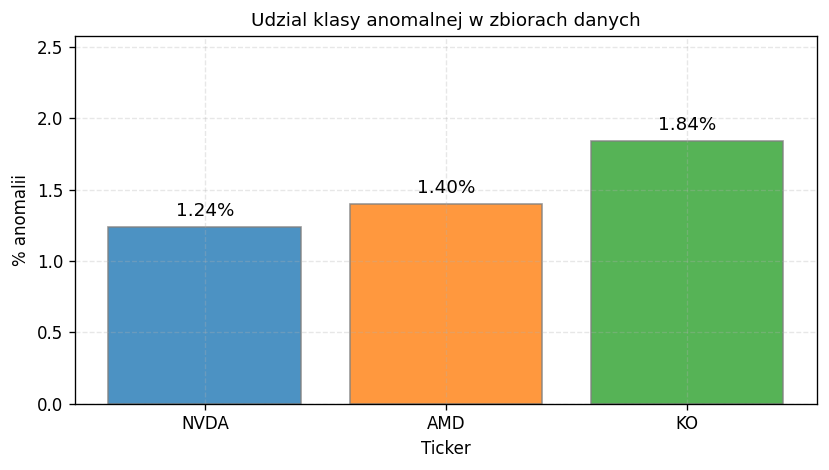
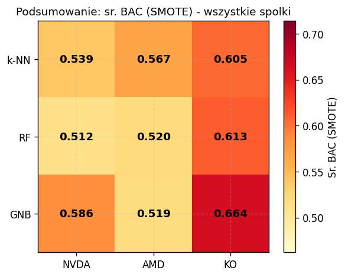

Opis problemu
Celem projektu jest klasyfikacja binarna dni giełdowych jako anomalnych (duża zmiana ceny)
lub normalnych. Anomalię definiujemy regułą 3-sigma: dzień, w którym dzienna stopa zwrotu
odchyla się o więcej niż 3 odchylenia standardowe od kroczącej średniej rocznej.
Dane pobrano z Yahoo Finance (biblioteka yfinance). Analizujemy 3 spółki: NVDA, AMD oraz KO —
reprezentujące różne poziomy zmienności. Horyzont: 10 lat danych dziennych (~2500 próbek/spółkę).
Kluczowe wyzwanie: niezbalansowane klasy — anomalie stanowią tylko 1–2% próbek.
Dlatego stosujemy techniki resamplingu (SMOTE, ROS, RUS) i mierzymy Balanced Accuracy zamiast zwykłej dokładności.
P1 — Eksploracja danych

Udział klasy anomalnej
Na każde 100 dni giełdowych przypada tylko 1–2 anomalie. Tak silne niezbalansowanie wymaga
specjalnych technik (np. SMOTE) — bez nich modele ignorują rzadką klasę.
Klasyfikatory i metody resamplingu
3 klasyfikatory:
• k-NN (k=5) — klasyfikator instancyjny, szuka 5 najbardziej podobnych dni w historii
• Random Forest (100 drzew) — metoda zespołowa, głosowanie drzew decyzyjnych
• Gaussian Naive Bayes — klasyfikator probabilistyczny, modeluje rozkład normalny cech
4 metody resamplingu:
• None — brak wyrównywania klas (surowe dane)
• ROS — losowe kopiowanie przykładów anomalii
• RUS — losowe usuwanie normalnych dni
• SMOTE — generowanie syntetycznych anomalii (interpolacja)
Podsumowanie wyników — wszystkie spółki

Mapa ciepła BAC (SMOTE) — wszystkie spółki × klasyfikatory
Ciemniejszy kolor (czerwony) = lepszy wynik. GNB+KO SMOTE = 0.664 (najlepszy wynik w tej mapie).
Cała kolumna KO jest ciemniejsza niż NVDA i AMD — stabilna spółka = łatwiejszy problem.
Wnioski końcowe
1. GNB wygrywa na 2/3 spółek (NVDA i KO) i jest istotnie lepszy od RF (p<0.05 dla obu).
Probabilistyczne podejście dobrze modeluje rzadkie zdarzenia przy założeniu rozkładu normalnego.
2. Accuracy jest myląca. k-NN bez resamplingu: 99% ACC, ale BAC=0.50 — model nigdy nie wykrywa anomalii.
Dlatego używamy Balanced Accuracy jako głównej metryki.
3. Niska zmienność = łatwiejszy problem. KO (σ≈0.012) — najlepszy BAC=0.677 (k-NN+RUS), GNB+SMOTE=0.664.
NVDA (σ≈0.031) — najlepszy BAC=0.640 (RUS), GNB+SMOTE=0.586. 3× wyższa zmienność oznacza trudniejsze wykrywanie anomalii.
4. SMOTE nie jest zawsze najlepszy. Na NVDA GNB radzi sobie lepiej bez resamplingu.
RUS (agresywne usunięcie normalnych dni) często bardziej pomaga k-NN i RF.
5. GNB jest niestabilny. Wysokie odchylenie standardowe wyników między foldami (np. GNB SMOTE NVDA: σ=0.061).
k-NN jest bardziej przewidywalny choć średnio słabszy (k-NN SMOTE NVDA: σ=0.046).